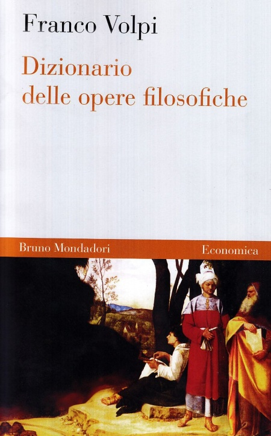

29:25 · 4 OPERE
Robert Musil, Sulla stupidità
Il filo del discorso
La conferenza Sulla stupidità è letta come uno strumento per interrogare il rapporto fra potere, cultura e intelligenza. Dopo la presentazione del testo e del suo contesto, il commento richiama L’uomo senza qualità e la rappresentazione della Cacania per discutere la manipolazione dei fatti attraverso il linguaggio. La lettura di Musil introduce poi una stupidità capace di assumere l’aspetto del progresso e del talento, distinta dalla semplice incapacità individuale.
Leggi la sintesi completaRiduci la sintesi
Il discorso difende la cultura come confronto fra tesi e come esercizio del giudizio, attraversando una digressione sui dizionari filosofici e sulla selezione accademica degli autori. Alcuni passaggi della conferenza mettono in relazione la richiesta di obbedienza nei subordinati e negli alunni. Nella parte finale il relatore contesta i test d’intelligenza, interpretandoli come strumenti di adattamento culturale, e si domanda quali capacità e figure la società scelga di premiare. Le valutazioni su scuola, accademia, politica e misurazione dell’intelligenza appartengono al commento del relatore.
I libri nel discorso

Sulla stupidità
Note sul riferimento
Copertina: La Vita Felice, 2013
Autore e titolo sono presentati nei primi segmenti; il testo è ripreso e letto durante tutto il video.

L’uomo senza qualità
Note sul riferimento
Copertina: Newton Compton · eBook di riferimento
Il romanzo è nominato a 03:12 e nuovamente a 07:27; segue il commento alla Cacania.

Nietzsche
Identificazione probabile
Note sul riferimento
Copertina: Adelphi, 2018 · edizione di riferimento
Nella digressione su Volpi sono nominati una traduzione, Heidegger e Adelphi; il titolo è fortemente deformato nei sottotitoli.

Dizionario delle opere filosofiche
Note sul riferimento
Copertina: Bruno Mondadori, 2009
Il nome di Volpi introduce la digressione; il titolo del dizionario è esplicito a 16:06–16:09.